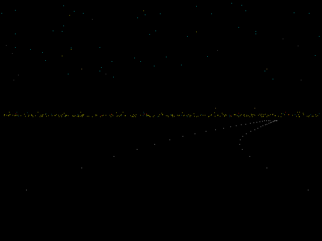

夜は、まだ続いている。
懐かしい道を、
もう一度。
夜空の下、カーブを抜けて、街の灯りの向こうへ。
かつての「FreeWay」の雰囲気を、今のMacで楽しむスクリーンセーバー。
Developer ID署名・Apple公証はありません。インストール前にGatekeeperの注意事項をご確認ください。
01 / THE SCENERY
点の光がつなぐ、夜の風景。

道路のカーブと起伏、遠くの街の灯り、星空と流れ星。シンプルな光の連なりが、走り続ける風景を描きます。
オプションから表示間隔、星のスクロール、流れ星、星と街の灯りの色、速度倍率を調整できます。「保存」で次回の開始時に反映されます。
02 / COMPATIBILITY
Apple Siliconにも、Intelにも。
Universal Binary（arm64 / x86_64）。最低対応OSはmacOS 13.0です。
| 機種 | OS | 確認内容 |
|---|---|---|
| MacBook Air（M2、2022年） | macOS 27.0.1 | 内蔵＋外部ディスプレイ |
| MacBook Pro（Intel、2020年） | macOS Sonoma 14.5 | ZIPの取得・展開、一覧表示、実行許可後の起動、設定保存、オプションの繰り返し表示 |
Intel実機では描画の全項目を詳細検証していません。macOS 13そのもの、および上記以外の機種・OS・画面構成での実機確認は行っていません。すべての環境での動作を保証するものではありません。
03 / GET STARTED
インストール方法
- 上のボタンからZIPをダウンロードして展開します。
FreeWayMac.saverをダブルクリックし、macOSの案内に従ってインストールします。- 警告が表示された場合は、以下のGatekeeperの案内を確認してください。
- システム設定のスクリーンセーバー画面でFreeWayMacを選択し、動作を確認します。
確認されている問題
Sonoma 14.5のIntel Macで、初回自動起動時に黒画面となった事例があります。通常の操作でデスクトップへ戻り、セキュリティ警告を確認してください。実行許可後は正常に起動しましたが、原因は確定していません。
macOS 27.0.1では、プレビューやスクリーンセーバーから復帰後にオプションを再表示できない場合があります。「システム設定」を終了して再起動すると改善することがあります。
04 / RELEASE
配布ファイルの確認
v1.0.0のリリース情報 · ZIPにはFreeWayMac.saver、README.txt、LICENSE.txtが含まれます。
SHA-256
17188a2d118b19b6f519cc93eb8adba94f68c459ed3e797cfb6adde9b6b56248
ハッシュ値はファイルの一致を確認するためのものです。安全性を保証するものではありません。
05 / THANK YOU
時を越えて、FreeWayへ。
オリジナルの「FreeWay」を制作されたFKS様に、心より感謝申し上げます。菅原芳弘様の「FreeWay for Win」は、動作と視覚表現を再現する際の参考としました。Mac版の開発に際して、菅原様からはご丁寧なお返事と温かいお言葉をいただきました。
FreeWayMacはmacOS向けに新たにプログラムを作成した独立した実装です。オリジナル版・Windows版のソースコードは使用していません。FKS様および菅原芳弘様による公式の移植版ではありません。
「FreeWay」に関する権利はFKS様に、「FreeWay for Win」に関する権利は菅原芳弘様に帰属します。FreeWayMac独自の実装に関する権利とは区別されます。
利用条件
ソースコード非公開のフリーウェアです。個人・法人を問わず無料で使用できます。再配布には、実行ファイルの無改変、README・LICENSEの同梱、著作権表示・謝辞の保持、FreeWayMac自体への課金禁止、制作者の詐称禁止、公式・公認作品との誤認防止などの条件があります。改変版の配布は禁止です。現状有姿で提供し、動作保証は行いません。
詳細はLICENSE.txtおよびREADME.txtをご確認ください。